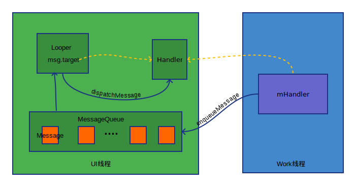

Handler机制概述
Handler是安卓框架中消息机制的核心，在开发中用到最多的就是通过消息传递通知主线程进行UI操作，比如UI更新，view事件等。
引入Handler机制的原因
安卓应用启动时，系统会创建一个主线程（一个应用的启动入口位于 frameworks/base/core/java/android/app/ActivityThread.java 的main方法中）。在该线程中会进行UI组件的加载、更新以及事件响应等与UI相关的操作，所以通常情况下该线程也被称为UI线程。那么为什么非得在该线程下进行UI相关的操作呢？其实这与安卓特性和线程安全有关，作为手机界面直接与用户交互的话就要保证每一个UI组件的唯一性和确定性，所以对于UI组件以及相关View类来说，它不是线程安全的。Java在多线程中解决不是线程安全的方法就是加锁，如果将加锁机制引入到Android框架中势必又增加了开发的复杂性并且容易出错。基于上述两点，安卓框架的设计就是在单一线程（主线程或UI线程）中进行UI操作。
到了实际开发中经常要进行耗时操作例如请求网络、从磁盘中加载数据等。为了提高用户体验，这些操作不可能放进UI线程中进行操作，因为这样肯定会阻塞UI线程造成界面的卡顿。这样就要引入多线程将耗时操作放到work线程中，等到数据或者网络请求完成后进行UI的更新操作时不能就在当前的线程中进行而要移步到主线程中进行操作，不然都话就要报错了，因为在ViewRootImpl类中会进行线程检查。
|
|
总结一下，安卓中主线程中进行UI操作为了确保用户操作的流畅性，在work线程中进行耗时操作不至于让用户在视觉上感觉到程序运行缓慢。为了连接这两种线程之间的通信我们引入消息机制即handler机制。简单的说，Handler机制就是将work线程中的消息转发到UI线程中进行操作（当然这是最常用到的，也有其他形式的消息发送与接收的实例）。
Handler机制的工作原理
Handler机制其实由三个类组成，它们分别是Handler MessageQueue 和 Looper。它们之间的关系就如同工厂车间生产零件和包装零件的过程，工厂中有两个车间一个是零件包装车间一个是零件生产车间它们分别代表两个线程，包装车间的工人只能在该车间中进行零件的包装工作，生产车间的工人进行着耗时的操作（生产零件），在两个车间之间有一条传送带，它每时每刻地都在循环的运转，负责将生产出的零件传送至包装车间供给包装车间的工人进行操作。在这个过程中，零件相当于Message，传送带相当于Looper，传送带上的所有零件又组成了MessageQueue，当传送带上的一个零件传送到包装车间时，该车间的工人取得这个零件并且对该零件进行操作，这个操作动作就是由Handler来完成的。由于生产车间工人短缺造成生产一个零件耗时较长，这时候传送带上（MessageQueue）没有零件（Message），传送带依然在不停的进行循环传送（Looper）的工作。当生产车间生产出一个零件（Message）时，将它放到传送带上进行传送（send），这里传送的目的地是包装车间（MainThread），生产车间的工人（WorkThrad）不关心其目的地而是全部交由传送带（Looper）控制，所以Looper对象的初始化很重要。在应用启动的时候我们可以看到已经为主线程初始化了Looper并且运转了该Looper
|
|
所以这也是为什么我们在主线程中使用Handler时不需要初始化Looper的原因了。如果我们不是在主线程中去应用Handler时，一定要初始化该线程的Looper最后启动Looper来保证Handler能接收到消息。
接下来就从源码角度具体看一看Handler机制的工作原理。首先看一下Handler的构造器
|
|
框架中对外提供的API只有前五个最后两个是隐藏的。其实这五个构造器也都是调用最后两个，我们把精力放到最后两个构造方法上就可以了。可以看到在初始化Handler的时候要求我们必须初始Looper否则会产生一个RuntimeException这正是我们之前分析的Looper控制着Message接收方向，如果没有Looper就不能接收Message从而Handler就没有意义。纵观这五个构造方法涉及到三个参数CallBack Looper和标记量async。async是异步操作的标示而Callback是一个回调接口给出代码后大家就很熟悉了它和我们经常使用的Handler中覆写handlerMessage的方法同名，其作用也是一样的操作接收到的Message消息。
|
|
接下来我们将关注的焦点放在Looper上，分析完Looper之后再回来看Handler。
打开Looper源码（frameworks/base/core/java/android/os/Looper.java）首先看到是注释部分，原话这里就不列出了，它主要讲的是Looper的用法，翻译成大白话就是：Looper类是用于在线程中循环一个消息队列。默认情况下一个线程是不会主动和一个消息Looper进行关联的；为了创建一个Looper需要在线程中调用prepear并且使用looper方法使消息队列运转起来。大多数情况下消息Looper和Handler直接交互，下面是一个例子展示了Looper的创建与handler的交互。
|
|
接下来我们看一看prepear方法。
|
|
sThreadLocal是一个静态final成员变量。
|
|
ThreadLocal是一个存储器，存储了每一个线程下Looper对象。对于不同的线程创建Looper对象时，那么对于该线程来说这个Looper对象要保证唯一性和原始性，这样才能保证消息message的传递被该线程下和该Looper关联的Handler所接收和处理，从而保证了消息接收的正确性。
|
|
接着跟进代码，我们发现Looper的构造中将初始化MessageQueue并且在成员变量mthread中存储当前线程。至此，Looper的初始化工作就完成了。下面看一下loop方法如何循环运转MessageQueue。
|
|
很明显，在代码中一个大写的死循环，只有当msg=null的情况下才能退出循环。Message通过MessageQueue获得（稍后再看）该过程有可能被阻塞因为这要取决于消息队列是否有消息，一旦发送了消息就会立即获得msg对象并且通过msg.target.dispatchMessage(msg)进行转发msg.target是一个Handler对象，调用dispatchMessage方法，在目标线程中进行派发。
看到这里是不是有一种豁然开朗的感觉呢？我们每次使用Handler的时候都会覆写handleMessage方法，然而在Looper中取得消息后即交由Handler的handleMessage进行处理。接着核心的东西来了，我们来研究下消息队列存取消息的原理，这里移步到MessageQueue类来看。
首先来看MessageQueue的出队列即取消息，这里也是一个大写的死循环，队列中只要有消息就会取出并且将指针向前移动直到将所有的消息都取出来为止。接着再来看一看消息的入队列的过程。
这里也是很清楚的看到msg的入队列的过程，没什么好说的。下面我们寻找所有的入队列的操作，在Handler类中
所有的消息发送无论是sendMessage还是postXXX形式的消息发送最终都是调用enqueueMessage入队列方法，交给Looper和MessageQueue进行消息的递交工作，并且最后派发给Handler所在的类中进行消息的消费工作。至此，安卓框架的消息机制就由Handler MessageQueue和Looper完美配合下完成了。通过上述的源码分析可以得出如下图所示的Handler的工作原理。

在实际开发中运用该机制在不同线程中进行消息的派发和消耗是一件很惬意的事情。哈哈，主要还是致力于解决在第二节中提到的UI线程和工作线程之间的矛盾冲突，这才是Handler真正的用武之地！
HandlerThread
HandlerThread是安卓框架提供的一个自带Looper具有循环递交Message功能的线程，它位于frameworks/base/core/java/android/os/HandlerThread.java下。因为默认（除了主线程，前文已经说明原因）线程是不会绑定Looper需要我们手动初始化和启动Looper对象。
HandlerThread通过覆写run方法并且在其中进行Looper初始化和启动工作。并且提供一个onLooperPrepared接口方便子类进行Looper启动前的工作。
HandlerThread的出现使我们很方便进行消息的传递和消费工作，而不需要手动添加Looper创建与启动的代码。